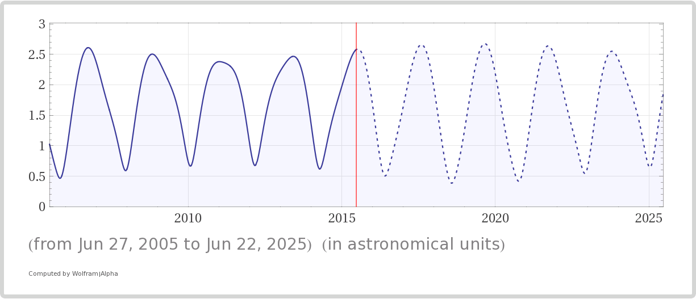
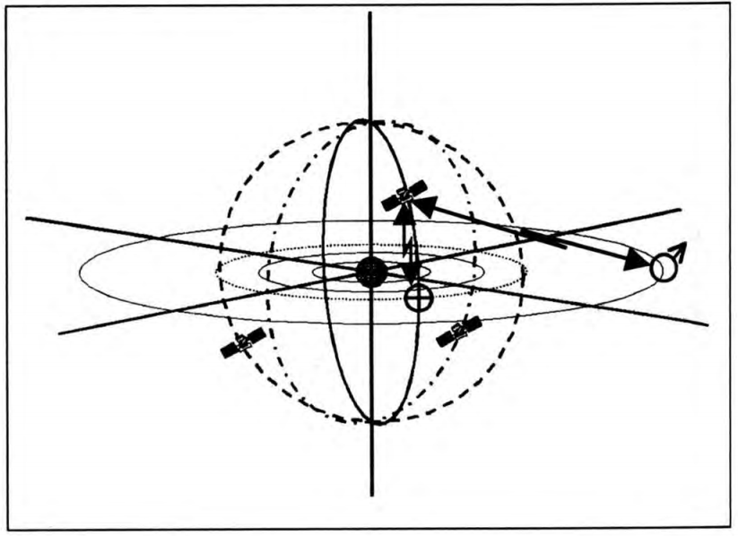
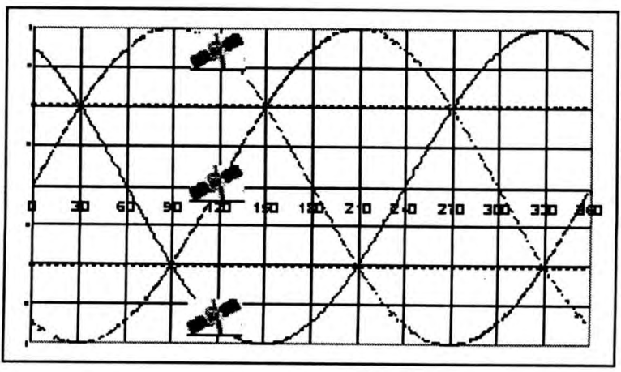
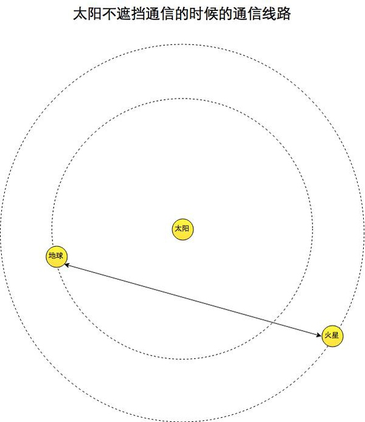
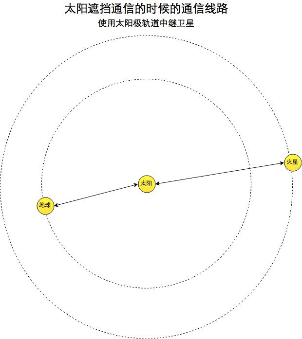
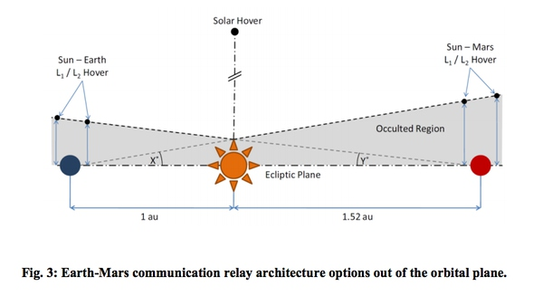
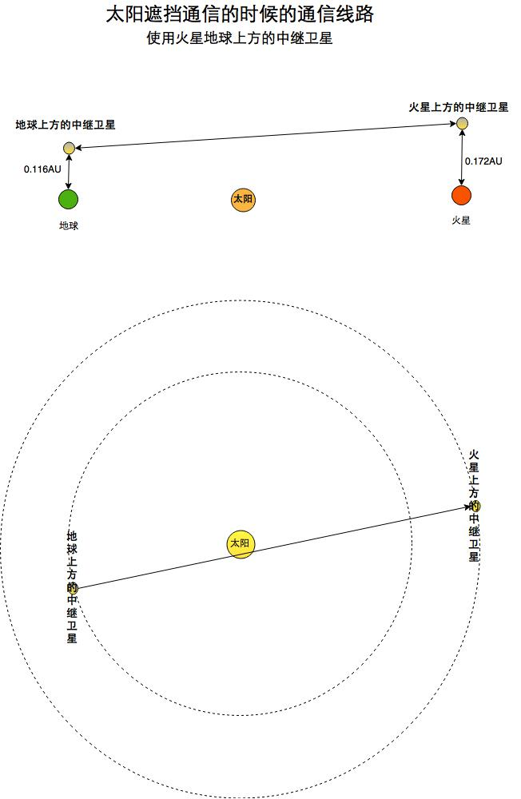
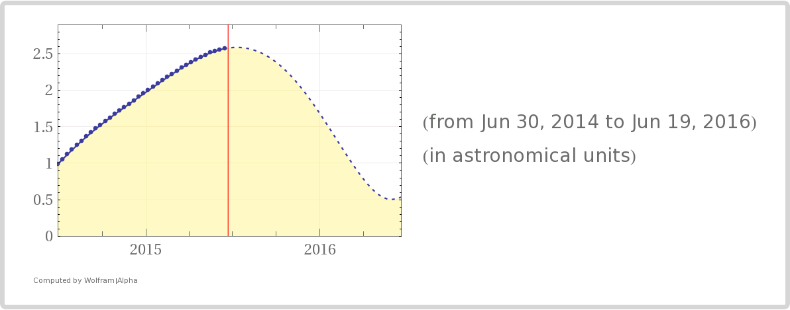

行星际通信相关问题
地球和火星相距遥远，电磁波信号的传输存在很多问题。
地球和火星之间相距遥远，最近几年来看，基本上平均最近的时候在 0.5AU，电磁波信号大约延时 250s，最远平均在 2.5AU，电磁波信号大约延时 20 分钟多一点。当然这不是火星和地球相距最近最远。由于火星的轨道的偏心率比较大，最近可以达到 0.37AU，最远可以达到 2.68AU. 1

所以这样遥远的距离，网站等互联网应用就会出现新的问题：
- 中继卫星设计：中继卫星除了要满足足够好的中继效果，例如提供完全无终端的中继，还要设计成尽量小的延时。
- 网络协议：现在使用的网络协议并不在适用，新的协议例如 DTN 协议更加合适。
- 网站设计：由于延时的存在，如何才能最大程度提高地球火星的用户体验。
信号传播问题
首先的问题是信号衰减，因为距离遥远，信号会衰减很多，然而如果激光通信可以使用的话，衰减就不再是个问题了。关于 NASA 的激光通信的活动请参考 LCRD at Goddard Space Flight Center 。
- 火星全球通信没问题，跟地球差不多吧，用卫星来做，或者基站（没有电离层好麻烦需要好多基站）。
- 火星地球这种行星际通信就问题很多。火星和地球之间的通信跟两者在轨道上的相位有关。如果中间隔了个太阳，那通信就麻烦了。这时候需要中继卫星。
中继卫星的设计方法很多，从轨道类型基本上分为两类：Kepler 轨道上的中继卫星和非 Kepler 轨道的中继卫星。
Kepler 轨道中继卫星
大多设计都是 Kepler 轨道上的中继卫星，也就是不需要额外的燃料来维持轨道，这类卫星在引力作用下自由落体围绕天体转动。具体卫星的轨道设计是很多种的，例如下面这种太阳极轨道卫星2：

这篇文章是一个利用太阳的极轨道上的三颗卫星做中继，结合行星的同步卫星来通信的。这种设计最少只需要三颗就可以满足全太阳系的中继的需求了，但是需要三颗卫星的相位错开 120 度1，如下图：

这样在太阳系任何一颗行星的位置都可以通过这三颗中的至少一颗来中继。
同时这种设计的缺点也很明显，那就是太阳极轨道卫星的发射和维修的燃料消耗都是巨大的，好在不需要很多颗。
所以在没有太阳不会遮挡火星地球通信的时候，可以直接地球和火星之间，但是在太阳遮挡了地球和火星通信的时候，需要使用太阳极轨道中继卫星。所需要多花的时间可以忽略不计。


非 Kepler 轨道中继卫星
第二篇参考文献提到了很多的不在 Keplerian 轨道的通信卫星。如果使用太阳帆的话，倒也不需要携带燃料。不过这是理论阶段，并不知道太阳帆卫星作为轨道维持的动力能不能成功。 之所以叫做 Non-Keplerian 轨道上的卫星，是因为这些卫星并不是单单在引力作用下运行的，而是有个持续的推动力。例如这里面的两颗卫星的额外的推动力至少有个向上的分力。

上图中，Sun-Mars L1/L2Hover 那个在轨道上方 0.176AU 的地方。Sun-Earth L1/L2 Hover 那个 0.116AU。论文[2]中提到使用太阳帆或者离子发动机都行。由于火星太阳拉氏点（1、2）距离火星很近（大约都是距离火星 0.007AU），相比于这个设计中出现的其它的距离要小得多，所以在下面的示意图中，全部使用近似在火星上方的示意图。地球同。

总之中继卫星基本上是必备品。上面的 Non-Keplerian 卫星是一种比较省钱而且延时小的设计，由于中继卫星一直在火星和地球正上方，基本上信号是往上，到达卫星，然后直线到达火星上面的中继卫星，再由中继卫星下来。从地球出发到火星，仅仅比地球火星之间的直线距离增加 2.3 光分的距离，而且是在任意时刻仅仅比直接从地球到火星直线传播的信号多花 2.3 分钟，非常快。
不过，在没有太阳遮挡的时候（火星地球在太阳同一侧的时候），是不需要这两颗中继卫星的，直接通信是最省的方案。只有在有太阳遮挡的时候才启用上述两颗 Non-Keplerian 中继卫星。
通信协议问题
如果是网络通信的话，是需要很小心的，因为太空通信的两地相距很远，而且丢包率很高，传统的通信方式，会比较费时间或者通信终端。
所以 InterPlanetary Networking Special Interest Group (IPNSIG) 重新设计了一个星际网络协议，叫做 DTN 协议，Delay-Tolerant Networking，这个协议并不假定连续的 N-N 链接（星际中容易丢包），如果暂时找不到目标，数据并不会丢掉，而是储存起来，直到下次能够跟其他地方建立连接。因为太空中丢包或者被遮挡而不能通信的情况很多。所以 DTN 比较适合行星际的通信。 实际上如果可能，可以在很多卫星上装上这样的模块，形成一个行星际网络。
NASA 已经在火星探测器上测试过 DTN 协议了。DTN 的创始人之一在一次 TED 演讲中向大家展示了未来星际网络的愿景：利用 DTN 协议把太阳系的各个探测器联系起来，每个都可以作为中继，最终形成一个太阳系的行星际网络基础结构，然后利用这个结构可以向恒星际扩展（因为这样的话整个太阳系就成为一个巨型的接收器）。
网站的部署
其它的问题还有很多，比较重要的一个是延时的问题。由于人类传播信息的速度有限，所以从一个地方到另一个地方会花费时间，而行星际通信里面就会凸显出来。
下面是从 2014 年 6 月 30 日到 2016 年 6 月 19 日之间，地球和火星之间的距离变化，横轴是时间，纵轴是距离，单位是 AU。而光前进一个 AU 所需要的时间大约是 8 分钟。可以想想这样的延时下面，地球的 Dota 玩家和火星的 Dota 玩家之间连线是不太现实了，即使是玩回合制的游戏也是很沉闷无聊的。

在多年之内看的话，距离也差不多是这个量级上，
对于普通的网站，我们现今地球上也有类似的情况，曾经有那样的说法：世界上最遥远的距离是电信和网通之间的距离（虽然现在已经没有什么距离了）。所以我们需要专门的线路为不同的星球上的人服务。
例如在火星上缓存地球上的网站；或者由网站购买火星服务器，直接在火星上提供服务。
不过，使用缓存，在行星开放建设的早期，可能只能用户自己解决，就是其它行星上用自己的服务器缓存网页。不过随着行星开发，后来应该会有专门的 cache 服务商。或者网络提供方或者运营商会直接提供这样的行星之间无缝连接，例如有的互联网公司可以购买了火星的服务器来托管一份网站镜像，对于交互式的网站（比如社交网站）更加方便了。 不过这就需要火星有个独立的信息硬件架构.
顺便说一下，Mars One 的设想是，在火星上安装一个缓存服务器，先把网站缓存在火星服务器上，火星上的人浏览的时候从缓存服务器获取网页。这在早期确实是一个比较实惠的方案。